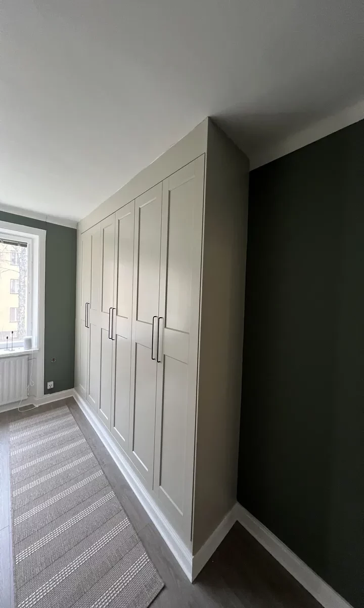

Lägenhetsrenovering i Enköping
Mer hem på samma kvadratmeter.
Vi hjälper dig med lägenhetsrenovering i Enköping. Hör av dig så går vi igenom platsen och förutsättningarna för ditt projekt.
Offertförfrågan
Genomtänkt.
Hela vägen.
Från en varsam uppdatering till en genomgripande förändring. Vi hjälper dig att förena funktion, material och uttryck i lägenheten. Planeringen utgår från dina behov och från bostadens förutsättningar.
Vi planerar arbetet tillsammans, håller dig informerad och följer upp resultatet. Materialval, tid, kostnad och garantivillkor går vi igenom för ditt uppdrag.

Frågor om
lägenhetsrenovering.
Vad avgör kostnaden?
Arbetets omfattning, material och särskilda önskemål. Vi går igenom projektet och tar fram en kostnadsfri offert.
När kan allt vara klart?
Tidsåtgången varierar från veckor till månader. Du får en uppskattning innan arbetet börjar.
Kan jag bo hemma under tiden?
Det avgörs i planeringen. Mindre arbeten kan fungera, medan en större renovering kan kräva tillfälligt boende.
Hur bestäms materialen?
Vi utgår från önskemål, användning och krav på hållbarhet. Miljöanpassade alternativ kan ingå.
Behöver förändringen godkännas?
Vi hjälper dig att kontrollera tillstånd och fastighetens regler. Stäm också av med bostadsrättsföreningen när det är aktuellt.